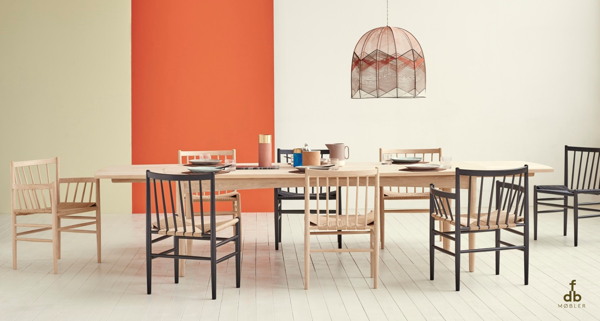
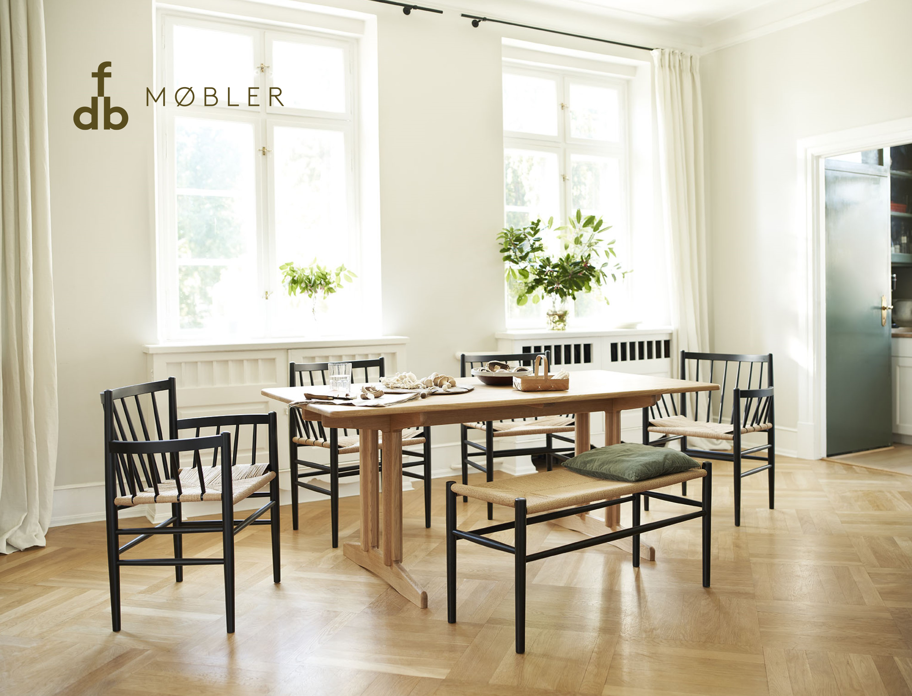
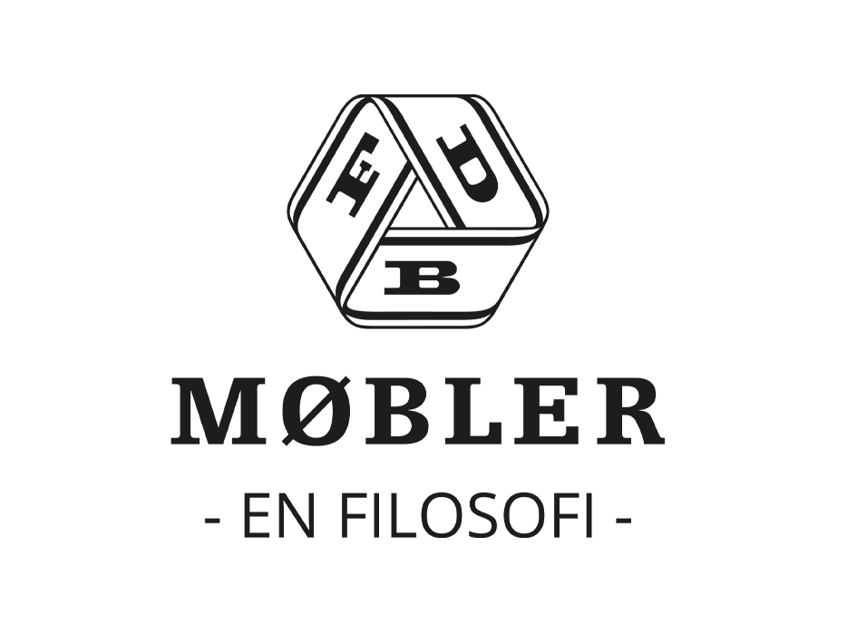
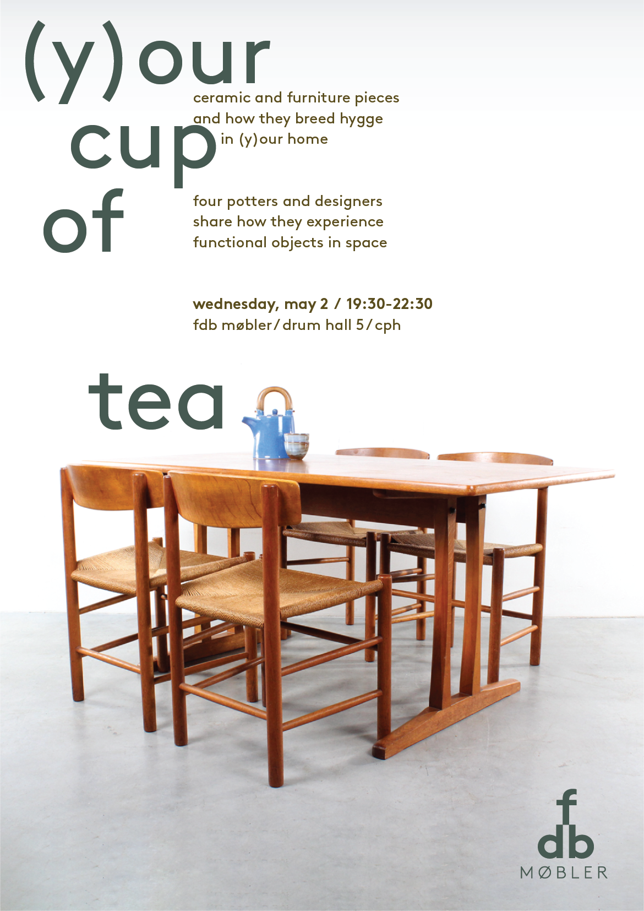

FDB Møbler
Brand Refresh

FDB Møbler Brand Refresh
2018
Overview
This project was a hypothetical rebranding for FDB Møbler, an iconic Danish furniture design company. We were prompted to research the brand system extensively, offer critique and potential for growth, and implement those proposed changes. The rebranding was centered on the creation of the new logotype and flourished in visual language from that point forward.
This project was created for Graphic Design Studio at the Danish Institute for Study Abroad during the Spring 2018 semester, under the instruction of Nanna Christensen. This project was completed in Copenhagen, Denmark. I worked on this assignment independently, but was happy to receive consistent feedback and critique from Nanna and my peers throughout the course of the project.
Process

- Discover
- Define
- Develop
- Deliver
At each stage, my classmates and I shared extensive feedback, critiqued each others' designs (all 10 students in the class developed a different, unique conception of the FDB Møbler brand refresh), and iterated further.
1. Discover
In the Discover stage, I performed research on FDB Møbler. I looked into the current competitors, brand language, and target audience. I visited storefronts for FDB Møbler in Copenhagen, Denmark, as well as storefronts for its competitors, Fredericia and HAY.
FDB Møbler is a classic, modern design company, originally headed by Danish architect Børge Mogensen. FDB Møbler's mission statement is, "To create beautiful, functional and exceptionally crafted furniture that makes room for everyday living at home. And that can withstand everyday wear and tear to age gracefully with those who use them." At its core, this company is know for elegant, simple pieces that can last for generations; it's a family company.
2. Define
In the Define stage, I began working on a new logotype for the FDB Møbler identity. This consisted of the conglomeration of my research (analysis of images, advertising copy, and current branding guidelines for both FDB Møbler and competitors), different brainstorming methods, physical and many nights lying awake thinking about furniture.
3. Develop
The Develop stage was an extremely critique- and collaboration-heavy portion of this project. As I began to develop a visual language, I consistently altered and refined my visual elements with help from my peers. The nascent logotype informed downstream decisions in the project, and it continued to bring the focus back to the conceptual roots of the project. (Special thanks to my awesome classmates for their help in this step!!)
4. Deliver
The final stage, Deliver, implemented the new style guide in FDB Møbler advertising copy, products, and stores. It was important to me that the history tie into the way the brand is applied – Scandinavian furniture design history must be subtly embodied in the merchandise, photography, and poster ads.
Final Visual Identity
![A Poster with fdb brand guidelines; the poster includes a section for logotype, in which the logotype is shown in two colors and 4 different sizes, the primary colors are listed in bubbles as a deep brown, teal, grey/beige, and white, graphic elements are shown, looking like furniture pieces, primary typefaces are shown as brown bold and brown regular, manual typeface modifications are explained, mockups for t-shirts, a backpack, a tote bag, a chair, and storefronts, and a sample event poster are included](images/fdb/finalDeliverables.png)
Reflections

More specifically, I was especially happy that the new identity was still in conversation with the old logo, but that the primary colors, sans-serif logotype, and merchandise felt refreshed and modern. To invite a little fun into the branding, I landed on the idea of the graphic elements looking like disassembled furniture parts, strewn around a room (kind of like when you build a particularly complicated piece of IKEA furniture). I felt that the graphic elements used the logotype to communicate craft in a clever way.
If I had more time in this project, I would love to experiment with the graphic elements further: would it be possible to make these more recognizable as furniture pieces? Eventually, I would like to work with motion graphics in AfterEffects to make the graphic elements more interactive. For comparison, I would also like to experiment more with color. While most competitors used a muted color palette, several notable companies (like HAY), use bright, fun colors. The chance to do additional market research would absolutely be fruitful!